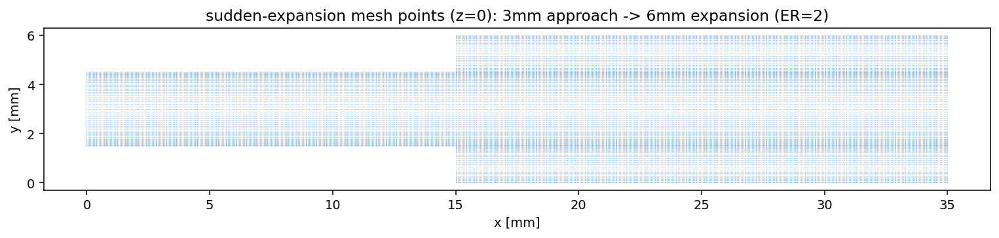
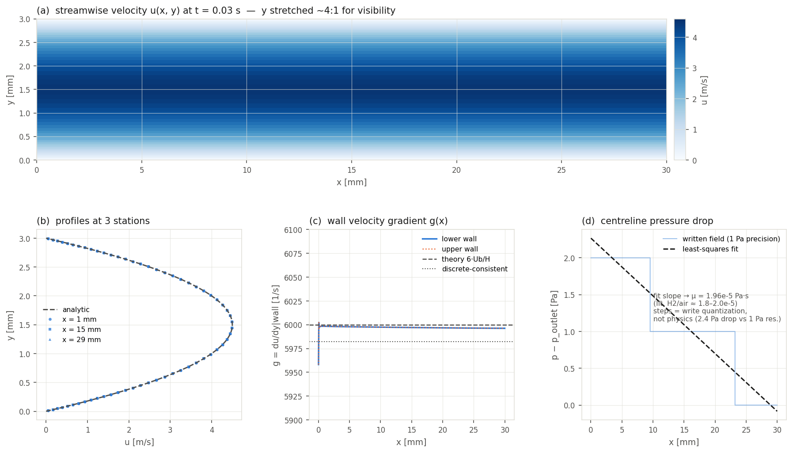
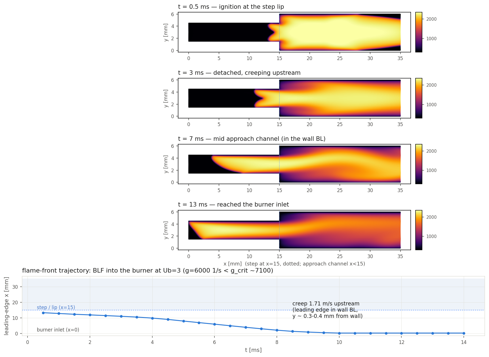
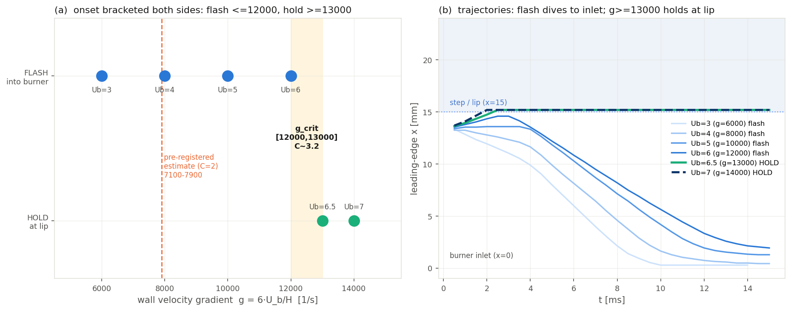
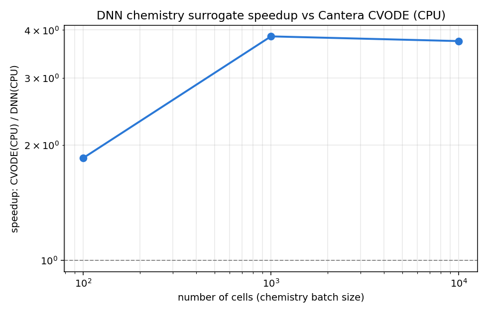

A DeepFlame model of how a premixed hydrogen flame creeps upstream through the wall boundary layer of a burner. Boundary-layer flashback is one of the top safety obstacles to hydrogen-fueled gas turbines. The work runs from cold-flow validation through a flashback-onset criterion matched to classical theory, then benchmarks a neural-network chemistry surrogate against direct Cantera CVODE integration.
Hydrogen burns roughly an order of magnitude faster than natural gas and diffuses faster than the heat it releases (Lewis number < 1). In a premixed burner this creates a failure mode called boundary-layer flashback (BLF). The flame propagates upstream through the slow-moving gas hugging the burner wall, into premixing hardware never designed to hold a flame. It is one of the most frequently cited stability and safety problems in making gas turbines hydrogen-capable.
Industry validation of BLF models follows a set structure. Simplified rig → semi-empirical model → applied to commercial hardware. TU Delft and PSI both built BLF models on the classical critical-velocity-gradient framework and applied them to a scaled version of GE's Flamesheet™ combustor. This project targets this framework as validation reference.
Build a hydrogen boundary-layer-flashback model from scratch in DeepFlame to isolate and quantify the onset mechanism, then use the same case to test whether a learned chemistry model can stand in for direct kinetics.
The core modeling decision was to isolate a single mechanism cleanly. A backward-facing step stabilizes the flame by recirculation and conflates shear-layer transport with wall creep. A rim-anchored channel leaves the wall boundary layer as the only path upstream, so when the flame moves upstream, boundary-layer flashback is the only available explanation.
With chemistry off, the channel reproduces the analytical fully-developed profile and recovers the wall velocity gradient g = du/dy, the quantity the onset comparison is built on, to within 0.1%. The reacting solver's laminar flame speed then gates against a Cantera 1D flame. The production mesh burns ~11% fast, quantified by Richardson extrapolation and carried through. This bias cancels in the onset check below.
| Quantity | Simulated | Reference | Deviation |
|---|---|---|---|
| Centerline velocity | 4.4962 m/s | 4.4943 m/s | +0.04% |
| Wall gradient g | 5996.1 1/s | 6000 (theory) | −0.07% |
| Bulk velocity (in → out) | 3.0003 → 3.0009 | 3.0 m/s | +0.03% |
| Sₗ (DeepFlame, Richardson) | 2.3209 m/s | 2.3209 (Cantera) | 0.00% |
In the rim-anchored geometry the flame ignites at the step lip and either flashes back or holds at the lip. When it flashes back it propagates upstream as a near-wall tongue, leading edge 0.2–0.4 mm off the wall, inside the boundary layer. Sweeping bulk velocity upward brackets the onset gradient.
| Uᵇ (m/s) | g (1/s) | Settled state | Creep Uᶠ (m/s) |
|---|---|---|---|
| 3 | 6,000 | flash | 1.68 |
| 4 | 8,000 | flash | 1.76 |
| 5 | 10,000 | flash | 1.53 |
| 6 | 12,000 | flash | 1.27 |
| 6.5 | 13,000 | HOLD at lip | 0 |
| 7 | 14,000 | HOLD at lip | 0 |
Onset lands at gcrit ∈ [12,000, 13,000] 1/s, a two-sided bracket rather than a single point. The flame flashes at 12,000 and holds at both 13,000 and 14,000. Cast in the semi-empirical critical-gradient model gc = C·(Sₗ/δq), the simulation implies a model constant C ≈ 3.2. That sits inside the documented C = 2.5–5 range (Kalantari & McDonell 2017) and is O(10⁴), like experimental H₂/air data. The +11% mesh bias cancels in C, since it scales both gcrit and Sₗ proportionally, so the consistency is bias-independent.




The per-cell chemistry integration is the expensive part of a finite-rate solve. A PyTorch surrogate trained on this case's H₂ chemistry swaps in for the Cantera CVODE call inside the solver. It runs, stays physical, and reproduces the direct integration to about five significant figures.
| Metric | Result | Note |
|---|---|---|
| Max species error |ΔY| | 3.3 × 10⁻⁵ | vs. Cantera CVODE ground truth |
| Mean species error | ~3 × 10⁻⁶ | ~5 significant figures |
| In-solver integration | stable | flame physical, exit 0 |
| CPU speedup (DNN vs CVODE) | ~2–4× | reference 189 µs/cell, CPU-vs-CPU |
